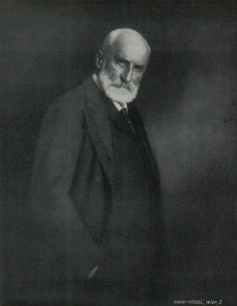

Porträts des Fürsten Johann II. von Liechtenstein

Eine der letzten Fotografien des Fürsten Johann II.

Fotografie aus dem Jahr 1928

Johann II. - 50-jähriges Regierungsjubiläum im Jahr 1908

Johann II. im Alter von 50 Jahren (1890)

Fürst Johann II. im Jahr 1863

Fürst Johann II. nach dem Antritt seiner Regierung im Jahr 1858

Johann II. als 11-jähriger Prinz

Porträt des späteren Fürsten Johann II. auf einem Pony (Friedrich von Amerling), 1845, Ausschnitt